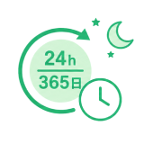
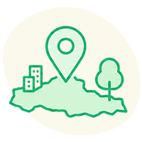
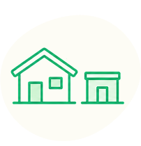

「住むなら埼玉」
AI相談
住まい・仕事・子育て・暮らし。
埼玉へ住み替えに関するギモン、
AIコンシェルジュが24時間365日いつでもお答えします。
AIコンシェルジュが24時間365日
いつでもお答えします。
埼玉県マスコット
「コバトン」
埼玉県マスコット
「さいたまっち」
あなたの住み替えを
AIがサポート
埼玉県の住み替えに特化した
AIコンシェルジュです。
知りたいこと、気になることを入力するだけで、
AIがチャットでお答えします。

24時間365日いつでも相談
深夜や休日でも、思い立ったときにすぐ相談できます。
登録不要・無料で利用可能
会員登録なしで、すぐに使い始めることができます。
埼玉県の情報に特化
市区町村別の支援制度・物件・生活情報をもとに回答します。
※表示内容はイメージです。
埼玉の暮らしに関する
こと、
何でも聞けます

エリア・市町村の特徴や雰囲気

二地域居住
就業・転職・
起業・就農
保育・学校・子育て支援制度
住まい・移住支援金・住宅補助
手続きの流れ・相談窓口・体験イベント
「住むなら埼玉」サイトに掲載されている情報をもとに、AIがあなたの質問にお答えします。
名前などの個人情報登録は不要です。
さっそくAIに聞いてみよう
タップ
※よくある質問をコピペしてもOK！
※回答に返答したり、続けて質問できます
※チャットウインドウが開きます
何から聞けばいい?
そんなときは、まずはコピペするだけ。
住み替え相談でよくある質問を集めました。
気になる質問を「コピー」して、チャットに貼り付けるだけですぐに相談が始められます。
よくある質問
一人暮らしにおすすめのエリアはどこ？
埼玉への移住がきになってる。何から考えればいい？
家賃を抑えつつ、生活の質を上げられるおすすめの街は？
カテゴリから選ぶ
家賃相場はどのくらい？東京と比べてどれくらい抑えられる？
「住むなら埼玉！応援パートナー」ってどんなサポートが受けられる?
「平日は都内、週末は埼玉」のような二地域居住はできる？
都心に通いやすくて自然も近いエリアの特徴を教えて
家族向けの広い間取り(3LDK以上)が見つかりやすいエリアの傾向は？
埼玉在住で東京へ通勤する場合、通勤時間の目安は？
テレワーク・リモートワークに対応したコワーキングスペースはある？
埼玉県内で就職・転職を考えた場合、どんな業種が多い？
副業・フリーランスとして働きながら埼玉に住むことはできる？
農業・地域おこしに関わる仕事に就くにはどうすればいい？
保育園・幼稚園の待機児童状況は東京と比べてどう？
小中学校の教育環境・学力レベルについて教えて
子育て世帯向けの医療費助成制度はある？
放課後の子どもの居場所（学童・放課後クラブ）はどう？
公園や自然体験ができる施設が充実しているエリアはどこ？
埼玉県の移住支援金はいくらもらえる？条件は？
住宅購入・リフォームの補助金制度を教えて
空き家バンクを利用した場合の補助はある？
起業・創業を目指す場合の支援制度はある？
市町村ごとに独自の補助制度はある？どう調べればいい？
東京への通勤に便利な路線・エリアを教えて
自然が豊かで静かな環境に住めるエリアはどこ？
子育てしやすい市町村のランキングや特徴を教えて
買い物や医療など生活利便性が高いエリアはどこ？
地価・家賃が比較的安いエリアはどのあたり？
移住を検討し始めたら、まず何をすればいい？
移住前に埼玉に住んでみる「お試し移住」はできる？
引っ越し費用の目安と節約のポイントを教えて
賃貸と購入、どちらが移住初心者に向いている？
移住相談窓口やイベントはどこで探せばいい？
AIコンシェルジュに埼玉暮らしを相談！
埼玉への住み替え・暮らしについて、AIコンシェルジュが今すぐお答えします。
※チャットウインドウが開きます